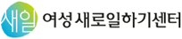
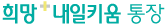
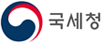
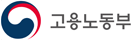

재무
재무설계?
'오래 살 위험에 대비하셨습니까?'' 이제 흔히 듣는 말이 되었습니다.
제대로 준비하지 않고 오래 사는 것은 이제 미덕이 아니라는 뜻입니다. 노후는 돈만으로 해결되지 않습니다.
몸은 물로이거니와 정신도 건강해야 하며, 취미와 봉사활동 그리고 학습 등을 통해 삶의 재미가 있어야 합니다.
또한 인간관계와 인생관이 건전하고 풍부해야 진정 행복한 노후라고 할 수 있습니다.
이런 다양함을 인정하면서, 돈을 중심으로 준비해 보는 것이 재무설계입니다.
재테크 관점과 재무설계 관점
개인이 가진 돈은 상대적으로 유한한 반면 써야 할 곳은 상대적으로 무한합니다.그 불일치를 사람들은 보통 돈을 더 버는 것으로 해결하려고 합니다.
재테크는 바로 이런 사고방식에 뿌리를 둔 관점입니다.당연히 상품의 이점을 중심으로 보게 되고 수익률로 결과를 보여주고자하는 사고방식입니다.
재무설계 관점에서는 수익률을 따지기 전에 돈 쓸 용도가 자신의 처지와욕구에 맞는지를 점검하는 것으로부터 출발합니다.
각자 다른 처지와 욕구에 맞는 목표를 정함으로써 돈에 끌려가지도 않고무리하지도 않게 됩니다.
이런 관점에 따르게 되면 개인과 가정, 나아가 사회 전체는 당연히 안정감을 얻게 됩니다.
노후준비 6요소
돈 관점의 노후는 필요자금과 준비자금으로 나눠 생각할 수 있습니다.
필요자금을 계산할 때 필요한 요소는 노후기간, 생활비, 물가상승률 세 가지입니다.
준비자금 측면에서는 준비기간, 투자금액, 투자수익률 세 가지입니다.
이것을 나타내는 공식은 S=a(1+r)ⁿ이고,그것을 표로 나타내면 아래와 같습니다.
| 구분 | 기간(n) | 자금(a) | 이율(r) |
|---|---|---|---|
| 필요자금 | 노후기간 | 생활비 | 물가상승률 |
| 준비자금 | 준비기간 | 투자금액 | 투자수익률 |
개인 입장에서 보면 필요자금은 적을수록 좋고 준비자금은 많을수록 좋습니다.
필요자금을 적게 하려면 노후기간과 생활비는 적게 하고 물가는 적게 올라야 합니다.
노후기간을 적게 하려고 일찍 죽을 수는 없는 일이고 가능한 방법은 은퇴를 늦게 하는 것입니다.
현재 버는 소득보다는 적게 벌더라도 일정소득을 얻는다는 것은 적은 자산으로도 노후를 대비하는 효과적인 방법입니다.
이는 단지 돈 측면에서만 필요한 것이 아니고 삶의 활기를 위해서 필요한 일입니다.누구나 넉넉한 생활비를 원하겠지만, 그러려면 다른 것들을 희생해야 합니다.
더 바람직한 것은 자신의 처지와 욕구에 맞으면서도 비용이 적게 드는 생활방식을 익히는 것입니다.
돈이 적게 드는 취미생활로 삶을 즐기거나 봉사활동으로 보람을 느끼는 것은 아주 유용한 방식입니다.
그런데 이런 것들은 노후에 갑자기 할 것이 아니라 젊어서부터 몸에 익히는 것이 좋습니다.
물가는 모든 사람들에게 부담을 줍니다만, 이것은 개인의 힘으로 해결하기는 어렵습니다.
정치권이나 사회 전체가 중산층과 서민들에게 물가부담을 적게 주는 정책을 계속 시행해야 합니다.
이제 준비자금을 살펴봅시다.일찍부터 노후설계를 하고 저축이나 투자를 한다면 그 부담은 적어집니다.
늘어난 노후기간과 증가하는 조세부담을 생각한다면 이제 사회에 첫발을 내딛는 순간부터 노후대비를 해야 합니다.
투자금액의 양 차원보다 더 중요한 것은 얼마나 오랫동안 투자하느냐 하는 점입니다.기간이 길수록 복리효과를 최대한 볼 수 있기 때문입니다.
준비기간은 노후설계 6요소 가운데 가장 쉬우면서도 영향력이 큰 요소이지만, 반면 가장 쉽게 지나쳐 버리는 요소이기도 합니다.
투자금액은 많을수록 좋지만 무조건 허리띠 졸라매는 식이어서는 곤란합니다.
금융상품을 목적에 맞게 합리화하고 소비성지출을 계획에 맞게 통제함으로써 추가저축량을 늘리는 방법이 좋습니다.
수익률 역시 높을수록 좋지만, 남다른 나만의 고수익은 쉽지 않습니다.그만큼 위험도 커집니다.
정말 고려해야 할 점은 자금이 필요한 시기와 위험률을 감안한 적절한 배분입니다.
-
재무 현금
기초연금
생활이 어려운 어르신에게 안정적인 소득기반을 제공하여 생활안정을 지원하는 서비스입니다.
- 문의처 : 보건복지부 콜센터(☎129)
- 신청방법 : 방문, 홈페이지
- 제공유형 : 현금
-
재무 현금
장애인연금
장애로 인하여 생활이 어려운 중증장애인의 안정된 삶을 위한 연금을 지급하는 서비스입니다.
- 문의처 : 보건복지부 콜센터(☎129)
- 신청방법 : 방문, 홈페이지
- 제공유형 : 현금
-
재무 정보
귀농귀촌지원제도
귀농귀촌 활성화를 위해 다양한 실행 지원 프로그램(상담, 교육, 정보제공 등)을 제공합니다.
- 문의처 : 귀농귀촌 콜센터(☎1899-9097)
- 신청방법 : 방문, 홈페이지
- 제공유형 : 상담 및 교육
-
재무 서비스
긴급복지지원 제도
생계곤란 등의 위기상황에 처한 사람에게 생계비 등을 신속하게 지원하는 제도입니다.
- 문의처 : 보건복지부 콜센터(☎129)
- 신청방법 : 방문, 유선
- 제공유형 : 서비스
-
 재무 서비스
재무 서비스노란우산
폐업·노령·사망 등의 생계위협으로부터 소기업·소상공인의 안정된 생활을 돕고, 사업재기의 기회를 제공하기 위해 운영되는 공적 공제제도입니다.
- 문의처 : 노란우산 콜센터(☎1666-9988)
- 신청방법 : 홈페이지, 모바일앱
- 제공유형 : 정보, 서비스 등
-
재무 정보
노인일자리사업
노인이 활기차고 건강한 노후생활을 영위할 수 있도록 다양한 일자리 및 사회활동을 지원하는 사업입니다.
- 문의처 : 노인일자리 상담 대표전화 (☎1544-3388)
- 신청방법 : 방문, 홈페이지
- 제공유형 : 정보, 서비스 등
-
재무 현금
농지연금
고령 농업인이 소유한 농지를 담보로 노후생활 안정자금을 매월 연금형식으로 지급받는 제도입니다.
- 문의처 : 한국농어촌공사 콜센터(☎1577-7770)
- 신청방법 : 홈페이지
- 제공유형 : 서비스
-
재무 정보
마이홈주거상담
공공임대, 주거급여, 주택금융 등 주거지원 정책에 대한 통합 안내 서비스입니다.
- 문의처 : 마이홈 콜센터(☎1600-1004)
- 신청방법 : 홈페이지
- 제공유형 : 서비스, 정보 등
-
 재무 현금
재무 현금서민금융지원제도
취약·서민계층의 원활한 금융생활을 지원하기 위해 다양한 서민금융 지원 제도를 제공합니다.
- 문의처 : 서민금융진흥원(☎1397)
- 신청방법 : 방문 및 홈페이지
- 제공유형 : 금융지원
-
재무 서비스
소상공인지원제도
소상공인 육성과 전통시장 활성화를 위해 다양한 소상공인지원 제도를 제공합니다.
- 문의처 : 중소기업통합콜센터(☎1357)
- 신청방법 : 방문, 홈페이지
- 제공유형 : 서비스
-

재무 정보여성 취업지원서비스
일하고자 하는 여성의 취업을 지원하고, 일하는 여성이 계속적으로 일할 수 있도록 지원하는 서비스입니다.
- 문의처 : 여성새로일하기센터(☎1544-1199)
- 신청방법 : 홈페이지
- 제공유형 : 정보제공, 서비스
-
재무 현금
주택연금
집을 소유하고 계시지만 소득이 부족한 어르신들이 집을 담보로 맡기고 자기 집에 살면서 매달 국가가 보증하는 연금을 지급받는 제도입니다.
- 문의처 : 한국주택금융공사(☎1688-8114)
- 신청방법 : 방문, 홈페이지
- 제공유형 : 서비스
-
재무 현금
중소기업퇴직연금제도
상시근로자 30인 이하 영세 사업장을 대상으로 확정기여형 퇴직연금(DC)과 기업형 및 개인형퇴직연금(IRP)을 제공하며, 퇴직연금 공적서비스를 제공합니다.
- 문의처 : 근로복지공단 퇴직연금 콜센터(☎1661-0075)
- 신청방법 : 방문
- 제공유형 : 서비스
-

재무 정보희망·내일키움통장
일하는 생계·의료·주거·교육급여 수급가구 및 차상위계층 및 자활근로사업단의 성실한 근로자들이 자산을 형성할 수 있도록 지원하는 사업입니다.
- 문의처 : 보건복지부 콜센터(☎129)
- 신청방법 : 방문, 홈페이지
- 제공유형 : 서비스
-
재무 금융
에너지바우처
에너지 취약계층에게 에너지바우처를 지급하여 전기·가스·지역난방·LPG 등 필요 에너지의 이용 비용을 지원하는 제도입니다.
- 문의처 : 에너지바우처 콜센터(☎1600-3190)
- 신청방법 : 방문, 홈페이지
- 제공유형 : 금융지원
-
재무 현금
청년내일채움공제
청년이 중소기업에서 장기근속할 수 있도록 청년·기업·정부가 2년 간 공동으로 적립하여 청년의 자산형성을 지원하는 제도입니다.
- 문의처 : 고용노동부 고객상담센터(☎1350)
- 신청방법 : 홈페이지
- 제공유형 : 금융지원
-

재무 현금근로장려금
일은 하지만 소득이 적어 생활이 어려운 근로자, 사업자 가구에 대하여 근로를 장려하고 실질소득을 지원하는 근로연계형 소득지원 제도입니다.
- 문의처 : 근로·자녀장려금 상담센터(☎1566-3636)
- 신청방법 : 유선, 홈페이지
- 제공유형 : 현금
-
재무 현금
자녀장려금
만 18세 미만의 부양자녀가 있는 저소득 가구의 자녀양육 부담을 경감하기 위한 지원 제도입니다.
- 문의처 : 근로·자녀장려금 상담센터(☎1566-3636)
- 신청방법 : 유선, 홈페이지
- 제공유형 : 현금
-
재무 정보
농어가 목돈마련 저축 장려금
농어민의 재산형성을 지원하고 안정된 생활기반 조성을 위한 정책상품으로 일정기간 저축 시 원리금과 저축장려금을 지급합니다.
- 문의처 : 농협(☎1600-2800), 수협(☎1588-4119)
- 신청방법 : 방문
- 제공유형 : 정보
-

재무 금융출산육아기고용안정장려금(대체인력지원금)
직원의 출산전후휴가, 유산ㆍ사산 휴가, 육아기 근로시간 단축기간 중 대체인력을 채용하여 사용하는 사업주에게 지원금을 지급하는 제도입니다.
- 문의처 : 고용노동부 고객상담센터(☎1350)
- 신청방법 : 방문, 홈페이지
- 제공유형 : 금융지원
-
재무 금융
고령자 계속고용장려금
정년에 도달한 근로자를 정년 이후에도 계속 고용하는 제도를 운영하는 사업주에게 비용의 일부를 지원하는 제도입니다.
- 문의처 : 고용노동부 고객상담센터(☎1350)
- 신청방법 : 방문, 홈페이지
- 제공유형 : 금융지원
-
재무 금융
신중년 적합직무 고용장려금
만 50세 이상 구직자를 신중년 적합직무에 고용하는 사업주에게 인건비를 지원하여 신중년 고용을 창출하는 제도입니다.
- 문의처 : 고용노동부 고객상담센터(☎1350)
- 신청방법 : 방문, 홈페이지
- 제공유형 : 금융지원
-
재무 서비스
건설근로자 생활안정대부
건설근로자의 실질적인 생활안정에 기여하고자 공제회에서 규정한 6가지 사유에 해당사항이 있는 경우 대부금을 지원하는 서비스입니다.
- 문의처 : 건설근로자공제회 대표전화(☎1666-1122)
- 신청방법 : 방문, 홈페이지
- 제공유형 : 서비스
-
재무 서비스
근로자 생활안정자금 융자
저소득근로자에 대한 생활자금과 임금체불로 인해 생계곤란을 겪는 근로자에게 생계비를 저리로 융자하여 생활안정 및 근로의욕을 고취하는 사업입니다.
- 문의처 : 근로복지공단 대표전화(☎1588-0075)
- 신청방법 : 방문, 홈페이지
- 제공유형 : 서비스
-
전국은행연합회
은행별 상품과 금리를 확인할 수 있으며, 금융관련 다양한 정보를 제공합니다.
-
저축은행중앙회
저축은행별 상품과 금리, 대출정보를 확인할 수 있으며, 금융관련 다양한 정보를 제공합니다.
-
생명보험협회
개인연금 등 가입한 보험 내역과 보험과 관련한 여러 정보를 제공합니다.
-
손해보험협회
보험가입내역과 손해보험 및 연금 등 정보를 제공합니다.
-
금융소비자 정보포털(파인)
금융상품, 휴면계좌, 보험가입내역 등 각 금융기관의 정보를 통합하여 제공합니다.
-
서민금융 1332
서민맞춤대출, 서민우대상품, 불법사금융 대응, 개인신용정보 등 금융생활지원 서비스를 제공합니다.
-
퇴직연금 종합안내
퇴직연금 소개, 퇴직연금 수익률 비교 등 퇴직연금과 관련한 정보를 제공합니다.
-
펀드정보 One-Click 시스템
펀드상품, 수익률 등 펀드와 관련한 다양한 정보를 제공합니다.
-
한국금융투자자보호재단
투자자보호, 투자자교육, 금융상품비교, 금융사기 예방 등의 정보를 제공합니다.
-
한국주택금융공사
주택연금에 대한 정보를 제공합니다.
-
신용회복위원회
신용관리 및 신용회복 지원, 채무조정, 소액금융지원 등의 정보를 제공합니다.
-
사회연대은행
마이크로크레딧 창업지원, 사회적기업 지원, 대학생 학자금 지원 정보를 제공합니다.